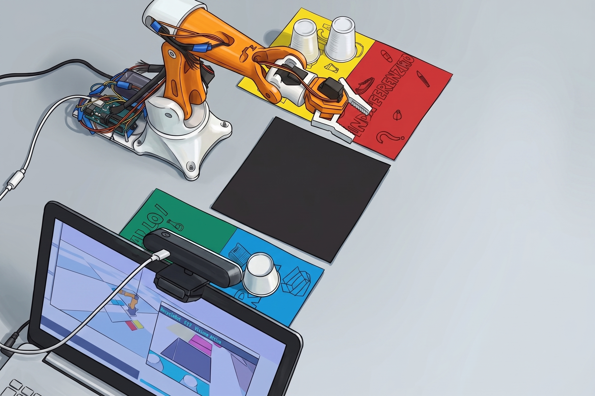

Ant-I-Waste è un sistema robotico intelligente progettato per automatizzare la raccolta differenziata dei rifiuti. Il nome richiama il comportamento delle formiche (ant), insetti noti per la loro capacità di organizzare e trasportare materiali con precisione, unito al concetto di rifiuto (waste) e alla negazione (anti-): il robot combatte attivamente il problema della gestione scorretta dei rifiuti.
Il sistema integra visione artificiale basata su reti neurali convoluzionali, pianificazione del movimento con cinematica inversa, simulazione fisica in tempo reale tramite PyBullet e controllo diretto di un braccio robotico a sei assi tramite comunicazione seriale con un microcontrollore ESP32.

Il progetto si propone di dimostrare l'applicabilità concreta di tecniche di intelligenza artificiale alla robotica industriale leggera. In particolare:
| Obiettivo | Tecnologia Impiegata | Modulo |
|---|---|---|
| Classificazione automatica dei rifiuti | Rete neurale Teachable Machine (Keras/MobileNet) | vision.py |
| Mappatura materiale → cestino | Tabelle di lookup deterministiche | material_map.py |
| Pianificazione del moto | Cinematica inversa (IK) PyBullet | main_real.py |
| Gemello digitale | Simulazione fisica real-time | main_real.py |
| Controllo hardware | Comunicazione seriale UART → ESP32 → Servo | main_real.py |
| Raccolta dati di training | Acquisizione webcam categorizzata | collect_dataset.py |
L'intero sistema è progettato secondo un'architettura human-in-the-loop: quando la rete neurale non raggiunge la soglia di confidenza minima (55%), il sistema non agisce autonomamente ma richiede conferma o scelta manuale all'operatore, garantendo così sicurezza e robustezza nelle situazioni ambigue.
Il sistema è strutturato in due thread concorrenti che comunicano attraverso code thread-safe (queue.Queue) e oggetti di sincronizzazione (threading.Event):
| Thread | Responsabilità | Frequenza |
|---|---|---|
| Thread A — Main | PyBullet simulation, IK, controllo seriale ESP32, interfaccia utente OpenCV | 240 Hz (sim) / 30 Hz (seriale) |
| Thread B — Vision | Acquisizione webcam, inferenza Keras, overlay visivo | ~30 fps (webcam) |
| Coda / Evento | Direzione | Contenuto |
|---|---|---|
| detection_queue | Vision → Main | Detections confermate da smistare al robot |
| frame_queue | Vision → Main | Frame video elaborati per la GUI OpenCV |
| scan_result_queue | Vision → Main | Risultato della scansione singola (label, material, conf) |
| scan_requested | Main → Vision | Evento: l'operatore ha premuto [P] |
| shutdown_requested | Main → Vision | Evento: terminazione globale |
PyBullet funge da gemello digitale del robot fisico. Ogni angolo articolare calcolato tramite IK nella simulazione viene trasmesso in real-time all'ESP32 tramite porta seriale (COM5, 115200 baud). Questo garantisce che la simulazione rispecchi fedelmente il comportamento del robot reale e permette di verificare la traiettoria prima e durante l'esecuzione.
Il file vision.py implementa la classe VisionSystem, cuore del riconoscimento degli oggetti.
Il sistema carica un modello Teachable Machine esportato in formato Keras (keras_model.h5). La funzione _load_dataset_model() implementa una strategia di caricamento a due tentativi per garantire compatibilità con versioni diverse di TensorFlow:
tf_keras (Keras 2 legacy) — compatibile con modelli TM su TF ≤ 2.15.tensorflow.keras con patch su DepthwiseConv2D per rimuovere il parametro groups non supportato nelle versioni più recenti di Keras 3.L'inferenza non viene eseguita sull'intero frame, ma su una Region of Interest (ROI) centrale pari al 50% del frame. Questo riduce il rumore di fondo e concentra la rete sulla zona dove l'oggetto viene posizionato dall'operatore.
# Normalizzazione Teachable Machine
img = cv2.resize(roi, (224, 224))
img = img.astype(np.float32) / 127.5 - 1.0
img = np.expand_dims(img, 0)
probs = model.predict(img, verbose=0)[0]
best_idx = int(np.argmax(probs))
conf = float(probs[best_idx])Il sistema applica una soglia di confidenza (DATASET_THRESHOLD = 0.55) per discriminare tra riconoscimento affidabile e incerto:
| Condizione | Azione | Source tag |
|---|---|---|
conf ≥ 0.55 | Materiale riconosciuto, restituito alla coda | "keras" |
conf < 0.55 | Materiale = indifferenziato, richiesta conferma operatore | "low_conf" |
Il modello è addestrato a riconoscere le seguenti 6 classi, definite in labels.txt:
| ID | Classe | Categoria |
|---|---|---|
| 0 | bicchiere di carta | carta |
| 1 | tovagliolo | carta |
| 2 | toy | indifferenziato |
| 3 | elastico per capelli | indifferenziato |
| 4 | lattina | metallo/vetro |
| 5 | bicchiere di plastica | plastica |
| Metodo | Descrizione |
|---|---|
| get_frame() | Cattura un frame dalla webcam tramite OpenCV |
| get_roi(frame) | Ritaglia la ROI centrale e restituisce offset (ox, oy) |
| _run_keras(frame) | Preprocessing + inferenza + thresholding |
| detect(frame) | Wrapper pubblico: ritorna lista di tuple (label, mat, bbox, conf, source) |
| scan_once(frame) | Scansione singola su comando [P]: include flag needs_confirm |
| draw_overlay(frame, dets) | Disegna bounding box, ROI, barra titolo e indicatori di confidenza |
Il modulo material_map.py è il dizionario semantico del sistema: traduce le etichette prodotte dai modelli di visione in categorie di smistamento e coordinate fisiche dei cestini.
Il modulo implementa tre livelli di mapping, usati in sequenza secondo la sorgente della classificazione:
| Funzione | Sorgente | Fallback |
|---|---|---|
| get_material_dataset(label) | Teachable Machine (dataset_objects) | None (non riconosciuto) |
| get_material(label) | TrashNet (YOLO) | "indifferenziato" |
| get_material_coco(label) | COCO (oggetti generici) | None (ignorato) |
from material_map import get_drop_pos, get_color, get_label
# Posizione 3D del cestino
pos = get_drop_pos("plastica") # → [0.20, -0.08, 0.002]
# Colore RGBA per PyBullet
col = get_color("carta") # → [0.0, 0.35, 0.55, 1.0]
# Etichetta leggibile
lbl = get_label("metallo_vetro") # → "METALLO/VETRO"Il file main_real.py costituisce il nucleo del sistema: orchestra la simulazione, la comunicazione hardware e l'interfaccia operatore.
Il robot fisico è un braccio a 6 gradi di libertà (DoF) con gripper (r_grip_joint). Il modello URDF viene caricato in PyBullet per la simulazione. I joint controllati sono: joint_1 … joint_6 e r_grip_joint.
La funzione move_to_tcp() implementa un pianificatore di traiettoria con interpolazione lineare e IK calcolata da PyBullet a ogni step:
ik = p.calculateInverseKinematics(
arm_id, ee_idx,
adjusted_target, # pos target + offset di calibrazione
tcp_target_orn, # quaternione orientamento EE
maxNumIterations=200,
residualThreshold=1e-5
)
L'interpolazione lineare nel tempo (alpha = step / n_steps) garantisce un movimento fluido tra la posizione corrente e quella target. A ogni step, gli angoli calcolati vengono trasmessi all'ESP32 tramite pacchetto seriale ASCII.
Il protocollo è estremamente semplice e robusto: 7 valori interi in gradi separati da virgola, terminati da newline. Ogni valore corrisponde all'angolo servo di un joint, mappato dall'angolo IK con:
servo_deg = 90.0 + degrees(joint_angle - home_angle)
servo_deg = clamp(servo_deg, 0, 180)
# Pacchetto: "j1,j2,j3,j4,j5,j6,gripper\n"
packet = "92,88,95,90,87,91,140\n"Sim: r_grip_joint → −0.19 rad | ESP32: servo → 90°
EE si posiziona 12 cm sopra il target di pick
Avvicinamento laterale a 5 cm dall'oggetto
EE scende fino alla sommità dell'oggetto (cube_top)
Sim: r_grip_joint → 0.4 rad | ESP32: servo → 140°
Percorso inverso: target → pre-approach → hover
IK verso bin_hover (12 cm sopra il cestino corretto)
EE scende alla posizione di rilascio
Rilascio oggetto nel cestino corretto
Il braccio torna alla posa di riposo (idle pose), pronto per il ciclo successivo
Quando la vision produce un risultato con needs_confirm = True (bassa confidenza), il sistema entra in uno stato di attesa e mostra all'operatore tre opzioni:
| Tasto | Azione |
|---|---|
[1] | Mi fido del modello → invia al robot |
[2] | No, rescansiona → nuovo ciclo di inferenza |
[3] | Scelta manuale → menù materiale (tasti 4–7) |
Il file collect_dataset.py è uno strumento standalone per la creazione del dataset di training. Permette all'utente di fotografare oggetti reali con la webcam e categorizzarli manualmente in tempo reale.
dataset/
├── carta/
│ ├── carta_20260130_143201_001234.jpg
│ └── ...
├── plastica/
├── metallo_vetro/
└── indifferenziato/| Tasto | Azione |
|---|---|
[1] | Seleziona categoria: carta |
[2] | Seleziona categoria: plastica |
[3] | Seleziona categoria: metallo/vetro |
[4] | Seleziona categoria: indifferenziato |
[SPAZIO] / [P] | Scatta foto e salva |
[Z] | Annulla e cancella ultima foto (undo stack) |
[Q] | Esci e mostra riepilogo |
Le immagini raccolte vengono poi caricate su Google Teachable Machine per addestrare il modello di classificazione MobileNet, oppure su Roboflow per pipeline di Object Detection con annotazione manuale dei bounding box.
Il modello è basato su MobileNetV2, un'architettura convoluzionale progettata per l'efficienza su dispositivi con risorse limitate. Teachable Machine esporta il modello come keras_model.h5 con il seguente preprocessing:
pixel / 127.5 − 1.0 (range [−1, +1])Teachable Machine permette di addestrare rapidamente un classificatore visivo personalizzato senza richiedere una vasta esperienza in deep learning. Il modello viene esportato in formato Keras/TFLite e può essere integrato direttamente in Python con poche righe di codice. Per un progetto accademico con un numero limitato di classi (6), questa soluzione offre un ottimo trade-off tra semplicità di addestramento e accuratezza.
Il file associa ogni indice di output a un nome di classe:
0 bicchiere di carta
1 tovagliolo
2 toy
3 elestico per capelli
4 lattina
5 bicchiere di plasticaLa soglia DATASET_THRESHOLD = 0.55 è stata scelta sperimentalmente per bilanciare il numero di falsi positivi (classificazioni errate accettate) e falsi negativi (oggetti correttamente identificati ma scartati). Un valore più alto (es. 0.80) riduce gli errori automatici ma aumenta le interruzioni per l'operatore.
Una volta raccolte nuove immagini con collect_dataset.py, è possibile aggiornare il modello di classificazione senza dover ripartire da zero. Il file .tm del progetto Teachable Machine consente di riprendere l'addestramento esattamente da dove era stato salvato.
Andare su teachablemachine.withgoogle.com e selezionare Image Project → Standard image model. Cliccare su Apri progetto esistente da un file e caricare il file .tm salvato in precedenza in dataset_objects/. Tutte le classi e le immagini già presenti verranno ripristinate.
Per ciascuna classe (es. lattina, bicchiere di plastica, …) cliccare su Aggiungi campioni e caricare le foto scattate con collect_dataset.py dalla cartella dataset_objects/<categoria>/. È consigliabile aggiungere almeno 50–80 immagini per classe, con variazioni di sfondo, angolazione e illuminazione.
Cliccare su Avanzato nel pannello di addestramento e configurare i seguenti iperparametri:
| Parametro | Valore consigliato | Motivazione |
|---|---|---|
| Epoche | 80 – 100 | Sufficiente per convergere senza overfitting su dataset di piccole dimensioni |
| Dimensione batch | 16 | Buon compromesso tra stabilità del gradiente e velocità su CPU/GPU |
| Tasso di apprendimento | 0.001 | Learning rate standard per fine-tuning di MobileNetV2; evita oscillazioni |
Cliccare Addestra il modello. Teachable Machine eseguirà il fine-tuning di MobileNetV2 nel browser tramite TensorFlow.js. Al termine viene mostrata la matrice di confusione e la precisione per classe: verificare che tutte le classi superino almeno il 70% di accuratezza prima di procedere.
Cliccare su Esporta il modello e selezionare la scheda TensorFlow → Keras. Scegliere Scarica il modello: verrà scaricato uno ZIP contenente i file keras_model.h5 e labels.txt.
Estrarre lo ZIP e copiare keras_model.h5 e labels.txt nella cartella dataset_objects/ del progetto, sovrascrivendo i file precedenti. Al prossimo avvio di main_real.py (o vision.py), il sistema caricherà automaticamente il nuovo modello aggiornato senza alcuna modifica al codice.
Prima di ogni esportazione è buona norma salvare anche il file .tm aggiornato (Cliccare le tre liniette in alto a sinistra, tasto su Salva progetto su Drive o Scarica progetto come file). Questo file contiene le immagini di training e la configurazione: senza di esso non sarà possibile aggiungere ulteriori campioni in futuro senza ripartire da zero.
Il file sim2real.ino è il firmware che gira sul microcontrollore ESP32 e rappresenta il ponte fisico tra la simulazione PyBullet e i servomotori del braccio reale. Viene compilato e caricato sull'ESP32 tramite Arduino IDE (versione 2.x o superiore).
Prima di poter compilare il firmware per ESP32, è necessario aggiungere il supporto alla board manager di Arduino IDE:
https://raw.githubusercontent.com/espressif/arduino-esp32/gh-pages/package_esp32_index.json
esp32 e installare il pacchetto esp32 by Espressif Systems.ESP32Servo dal Gestore librerie (Strumenti → Gestisci librerie → cerca "ESP32Servo").| Blocco | Funzione |
|---|---|
| Pin definitions | Mappa ciascun joint del braccio a un GPIO dell'ESP32 (BASE=13, SHOULDER=12, ELBOW=14, WRIST_ROLL=27, WRIST_PITCH=26, WRIST_YAW=25, GRIPPER=4) |
| currentAngles / targetAngles | Array di 7 float che rappresentano rispettivamente la posizione corrente e quella obiettivo dei servo. La posa di partenza è: Base=90°, Shoulder=180°, Elbow=0°, WristRoll=80°, WristPitch=180°, WristYaw=105°, Gripper=90° |
| readSerialAngles() | Legge dalla porta seriale (115200 baud) una riga ASCII nel formato a,b,c,d,e,f,g\n, dove ogni valore è un angolo intero in gradi [0–180], e aggiorna targetAngles[] |
| updateServosSmooth() | Ad ogni loop, interpola fluidamente currentAngles verso targetAngles con velocità massima di 80°/s. Usa millis() per calcolare il delta-tempo e garantire un movimento indipendente dalla frequenza del loop |
| Inversione assi | Gli assi ELBOW (idx 2) e WRIST_YAW (idx 5) vengono invertiti software (180 − θ) per compensare la cinematica fisica del braccio reale rispetto al modello URDF della simulazione |
Una volta cablati i servo ai pin definiti, collegare l'ESP32 via USB, selezionare la porta COM corretta in Strumenti → Porta e premere il pulsante Carica (→). Dopo il flash, aprire il Monitor Seriale a 115200 baud e inviare manualmente una stringa di test come 90,120,30,80,180,75,90 per verificare che i servo si muovano come atteso.
Le righe targetAngles[2] = 180.0f - targetAngles[2] e targetAngles[5] = 180.0f - targetAngles[5] sono fondamentali: il modello URDF PyBullet e il braccio fisico hanno convenzioni angolari opposte su quei due giunti. Senza questa correzione il braccio reale si muove in direzione opposta alla simulazione.
Il ciclo di vita completo di una operazione di smistamento si articola nelle seguenti fasi:
Thread Main avvia PyBullet, carica URDF, inizializza connessione seriale COM5. Thread Vision apre webcam e carica keras_model.h5.
Thread Vision cattura frame continuamente, li elabora con overlay e li invia al frame_queue. Thread Main li mostra nella finestra OpenCV. Il robot è in posa idle.
Thread Main setta scan_requested. Thread Vision esegue scan_once(): inferenza Keras sulla ROI, produce (label, material, conf, needs_confirm).
Se conf ≥ 0.55: confirm_state = "confirm", operatore vede il risultato e sceglie [1/2/3]. Se conf < 0.55: stessa UI, ma material = "indifferenziato" di default.
on_detection() inserisce il dict {label, material, bbox, confidence} nella detection_queue.
Thread Main estrae dalla detection_queue, crea il cubo virtuale in PyBullet, esegue la sequenza in 10 passi (IK + seriale), aggiorna HUD.
Robot torna alla posa di riposo. Sistema pronto per un nuovo ciclo (→ fase B).
L'architettura attuale di Ant-I-Waste, basata su thread Python e code condivise, è già concettualmente allineata con il paradigma publish/subscribe di ROS 2. Una migrazione verso ROS 2 porterebbe numerosi vantaggi: comunicazione distribuita, supporto a tempo reale tramite rclcpp, integrazione con MoveIt 2 per la pianificazione del moto, e interoperabilità con l'ecosistema ROS.
La seguente progettazione è compatibile con ROS 2 Humble Hawksbill (o versioni successive), Python 3.10+, e assume l'installazione di rclpy, sensor_msgs, std_msgs, geometry_msgs e cv_bridge.
Wrapper della webcam. Usa cv_bridge per convertire i frame OpenCV in messaggi sensor_msgs/Image e pubblica a ~30 Hz.
Sostituisce VisionSystem. Sottoscrive il topic immagine, esegue l'inferenza Keras e pubblica la classificazione con confidenza e bounding box.
Implementa la logica human-in-the-loop. Espone un servizio ROS 2 (ConfirmMaterial.srv) che l'interfaccia operatore chiama per confermare o correggere la classificazione.
Riceve il task di pick & place, pianifica la traiettoria IK (o via MoveIt 2), e pubblica gli angoli articolari su /joint_states. Gestisce la macchina a stati del robot.
Traduce i JointState ROS 2 nel protocollo seriale ASCII per l'ESP32. Sostituisce le funzioni build_servo_packet() e send_to_robot().
Interfaccia operatore: visualizza il feed video annotato e lo stato del robot. Chiama il servizio di conferma in risposta ai tasti [1/2/3]. Può essere implementato con rqt o una GUI web (roslibjs).
# RecycleDetection.msg
string label # "lattina"
string material # "metallo_vetro"
float32 confidence # 0.0 – 1.0
int32[4] bbox # [x1, y1, x2, y2]
bool needs_confirm # true se conf < soglia
# PickPlaceTask.msg
string label
string material
float32[3] pick_position # coord. XYZ oggetto (m)
float32[3] place_position # coord. XYZ cestino (m)
float32 confidence
# ConfirmMaterial.srv
# REQUEST
RecycleDetection detection
---
# RESPONSE
string confirmed_material # materiale scelto dall'operatore
bool rescan # se true, ri-eseguire la scansioneimport rclpy
from rclpy.node import Node
from sensor_msgs.msg import Image
from cv_bridge import CvBridge
from recyclebot_msgs.msg import RecycleDetection
from vision import VisionSystem # riuso diretto del modulo esistente
class VisionNode(Node):
def __init__(self):
super().__init__('vision_node')
self.bridge = CvBridge()
self.vision = VisionSystem()
self.sub = self.create_subscription(
Image, '/camera/image_raw', self.image_cb, 10)
self.pub = self.create_publisher(
RecycleDetection, '/recyclebot/detection', 10)
self.img_pub = self.create_publisher(
Image, '/camera/image_annotated', 10)
def image_cb(self, msg):
frame = self.bridge.imgmsg_to_cv2(msg, 'bgr8')
label, mat, bbox, conf, src, needs_confirm = \
self.vision.scan_once(frame)
if label:
det = RecycleDetection()
det.label = label
det.material = mat
det.confidence = conf
det.bbox = bbox
det.needs_confirm = needs_confirm
self.pub.publish(det)
annotated = self.vision.draw_overlay(frame, [])
self.img_pub.publish(
self.bridge.cv2_to_imgmsg(annotated, 'bgr8'))
def main():
rclpy.init()
node = VisionNode()
rclpy.spin(node)
if __name__ == '__main__':
main()Con ROS 2 è possibile sostituire il pianificatore IK custom con MoveIt 2, che offre pianificazione di traiettoria con obstacle avoidance, gestione di collisioni e supporto a diversi algoritmi (OMPL, STOMP, PILZ). Il file URDF del braccio è già disponibile e può essere importato direttamente in MoveIt Setup Assistant.
# Avvio con MoveIt 2
ros2 launch alve_x_moveit_config move_group.launch.py
# Nel robot_controller_node, usare MoveGroupInterface:
from moveit.planning import MoveGroupInterface
move_group = MoveGroupInterface(node, "arm")
move_group.set_position_target(pick_pos)
move_group.go(wait=True)| Aspetto | Attuale (thread Python) | Con ROS 2 |
|---|---|---|
| Distribuzione | Monolitico, single-machine | Multi-nodo, multi-macchina (DDS) |
| Debugging | print() / log manuale | ros2 topic echo, rqt_plot, RViz2 |
| Pianificazione moto | IK custom PyBullet | MoveIt 2 (OMPL, STOMP, PIlZ) |
| Real-time | Nessun supporto RT | rclcpp con Executor RT (con Linux PREEMPT-RT) |
| Simulazione | PyBullet | Gazebo / Isaac Sim con ros2_control |
| Registrazione dati | Nessuna | ros2 bag record (replay, analisi offline) |
| Scalabilità | Difficile aggiungere sensori | Nuovi sensori = nuovi nodi indipendenti |
Ant-I-Waste dimostra concretamente come tecniche di intelligenza artificiale — in particolare le reti neurali convoluzionali basate su transfer learning — possano essere integrate con efficacia in sistemi robotici reali a basso costo. Il sistema è operativo, testato su hardware fisico, e implementa correttamente il ciclo completo percezione → decisione → azione.
| Area | Sviluppo proposto |
|---|---|
| Visione | Sostituire classificazione con rilevazione oggetti (YOLOv11) per gestire più oggetti simultaneamente e stimare la posizione 3D tramite stereo o depth camera |
| Modello AI | Fine-tuning di EfficientNet su dataset più ampio (TrashNet, TACO) per migliorare la generalizzazione a oggetti non visti |
| Architettura SW | Migrazione completa a ROS 2 con MoveIt 2 per pianificazione avanzata del moto |
| Hardware | Aggiunta di sensore di forza/coppia al gripper per feedback tattile durante il pick |
| Autonomia | Riduzione della dipendenza dall'operatore tramite soglia adattiva basata sulla cronologia delle classificazioni |
| Deployment | Esportazione del modello in TFLite per inferenza su Raspberry Pi / NVIDIA Jetson integrato nel robot |
Il progetto Ant-I-Waste costituisce una base solida e modulare su cui costruire un sistema di smistamento robotico industriale. L'approccio human-in-the-loop adottato è particolarmente rilevante dal punto di vista dell'IA responsabile: il sistema non agisce autonomamente quando incerto, ma coinvolge l'operatore nella decisione, riducendo il rischio di errori di smistamento con conseguenze ambientali.